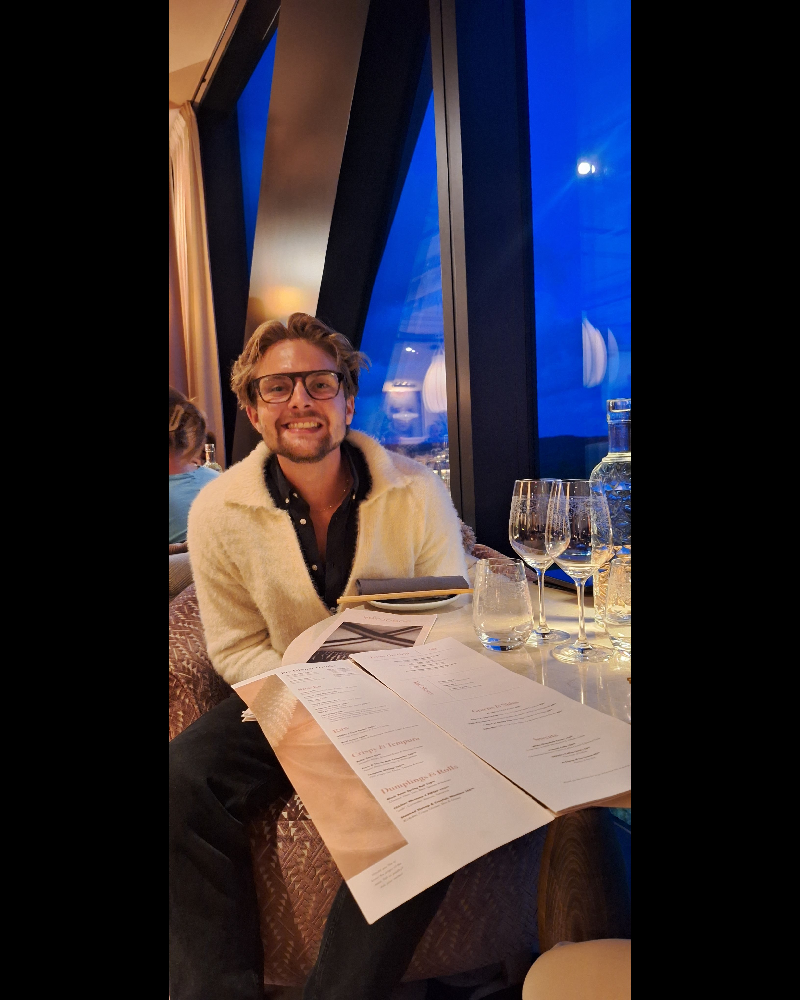

Simon Suits
Bygger bolag där kommersiell skärpa möter tekniskt djup. Grundare av NobleArc — holdingbolaget bakom WiseOS och VUE.

Under NobleArc.
AI-drivet rättningsoperativsystem för STEM-lärare. Byggt från grunden: Next.js, FastAPI, Vision OCR och matematisk verifiering via Wolfram Alpha och SymPy.
AI-driven plattform för personlig ekonomi. 13 skräddarsydda on-device AI-moduler integrerade med svensk bankinfrastruktur. Drivs tillsammans med en co-founder.
Från elitförsäljning till systembyggande.
Två AI-produkter designade, byggda och drivna under eget holdingbolag. Arkitektur, produkt och kommersialisering — end to end.
Den högsta säljtiteln i hela den svenska organisationen. Upprepade utmärkelser — Top Performer och Månadens Säljare — med ansvar för hela säljcykeln, från kalla samtal till stängda avtal.
Färre än 1 % av alla rådgivare i SverigeVerisure, i siffror.
Tekniskt djup, akademisk riktning.
Akademisk riktning
Högskolan i Halmstad — Tekniskt basår (2024–). Siktar på Civilingenjör Intelligenta system (2026). Heltidsstudier parallellt med att bygga två AI-system.